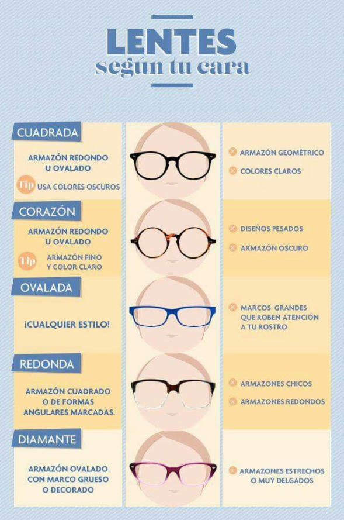
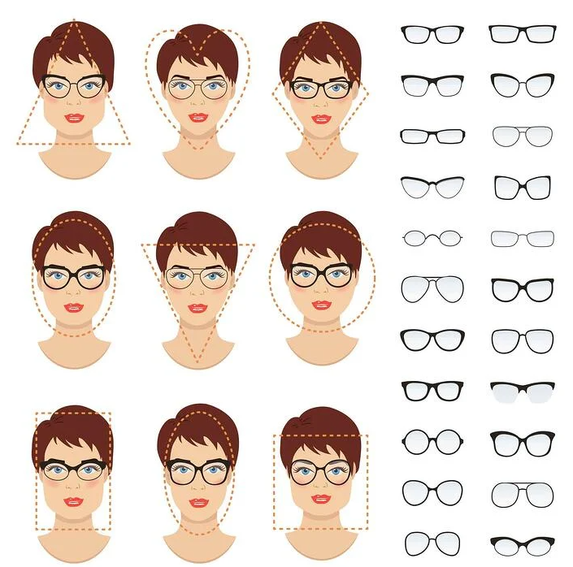

Tipos de marcos
Nosotros te ayudaremos a encontrar los mejores marcos para que no pierdas tu estile e incluso te ayuden a verte mejor
en las siguientes imagenes podras ver los tipos de marcos que tenemos y las especificaciones que tenemos en cuenta para que te veas increible

